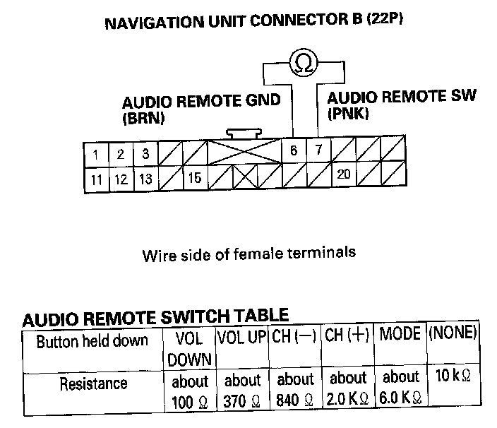
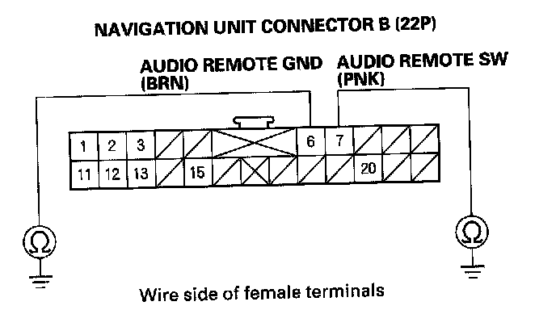
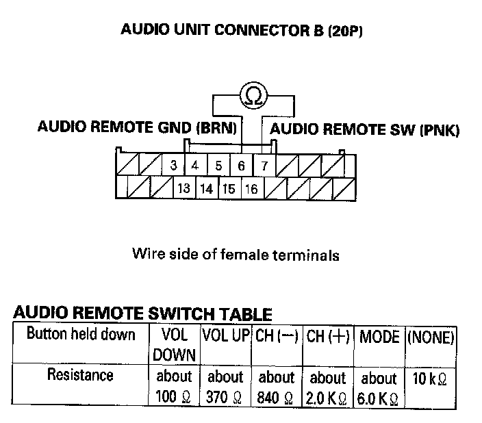
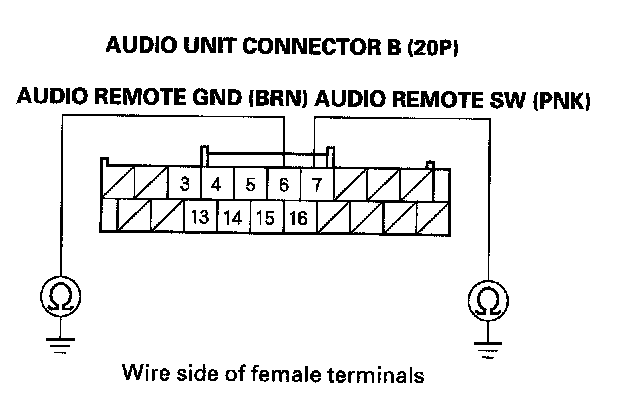

Audio Remote Switch Does Not Work Properly
Audio remote switch does not work properly1. Test the audio remote switch.
Is the audio remote switch OK?
YES - Go to step 2.
NO - Replace the audio remote switch.
2. Check the audio unit operation (volume up, volume down, CH (-), CH (+), MODE).
Is the audio unit operation OK?
YES
- With navigation: Go to step 3.
- Without navigation: Go to step 6.
NO
- With navigation: Replace the navigation unit.
- Without navigation: Replace the audio unit.
3. Remove the navigation unit.

4. Measure the resistance between navigation unit connector B (22P) No.6 and NO.7 terminals as specified in the table.
Is the resistance OK?
YES - Go to step 5.
NO - Repair open or high resistance in the circuit between the navigation unit and the audio remote switch. If the wires are OK, replace the cable reel.

5. Check for continuity between the No.6 and NO.7 terminals of navigation unit connector B (22P) and body ground.
Is there continuity?
YES - Repair short to body ground in the circuit between the navigation unit and the audio remote switch. If the wires are OK, replace the cable reel.
NO - Replace the navigation unit.
6. Remove the audio unit.

7. Measure the resistance between audio unit connector B (20P) No.6 and No.7 terminals as specified in the table.
Is the resistance OK?
YES - Go to step 8.
NO - Repair open or high resistance in the circuit between the audio unit and the audio remote switch. If the wires are OK, replace the cable reel.

8. Check for continuity between the NO.6 and NO.7 terminals of the audio unit connector B (20P) and body ground.
Is there continuity?
YES - Repair short to body ground in the circuit between audio unit and the audio remote switch. If the wires are OK, replace the cable reel.
NO - Remove the audio unit.